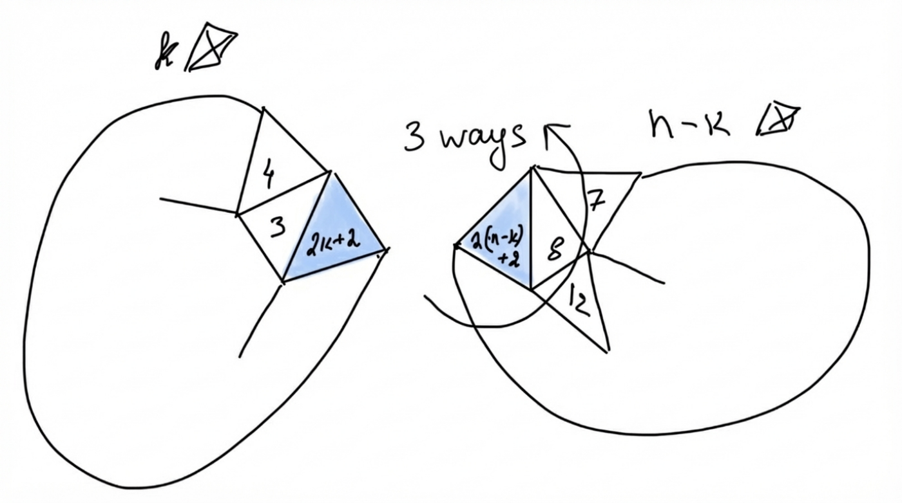
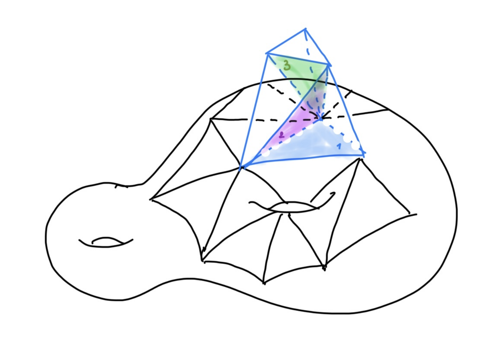

The Number of Polytope Trees and Beyond
The paper counts complexes built by gluing copies of a regular polytope along facets, weighting each complex by the inverse size of its automorphism group. It treats polytope trees, trees attached to a fixed initial complex, and complexes whose dual graphs contain cycles.
Labelling external codimension-1 facets turns the problem into a cut-and-join decomposition, which yields recurrences for tetrahedron trees and general polytope trees. These recurrences are converted into differential equations for exponential generating functions, which are solved for explicit formulas and asymptotics. The method is extended to bivariate generating functions indexed by the number of polytopes and the cyclomatic number of the dual graph. Nearly the entire work was formalized in Lean 4 with AI assistance.


The paper derives explicit counting formulas and asymptotic estimates for polytope trees and inductive complexes. It gives recurrences and PDEs for complexes with cycles, with explicit coefficient formulas for possibly disconnected configurations. The degenerate case h=2 (segments) is solved in closed form.